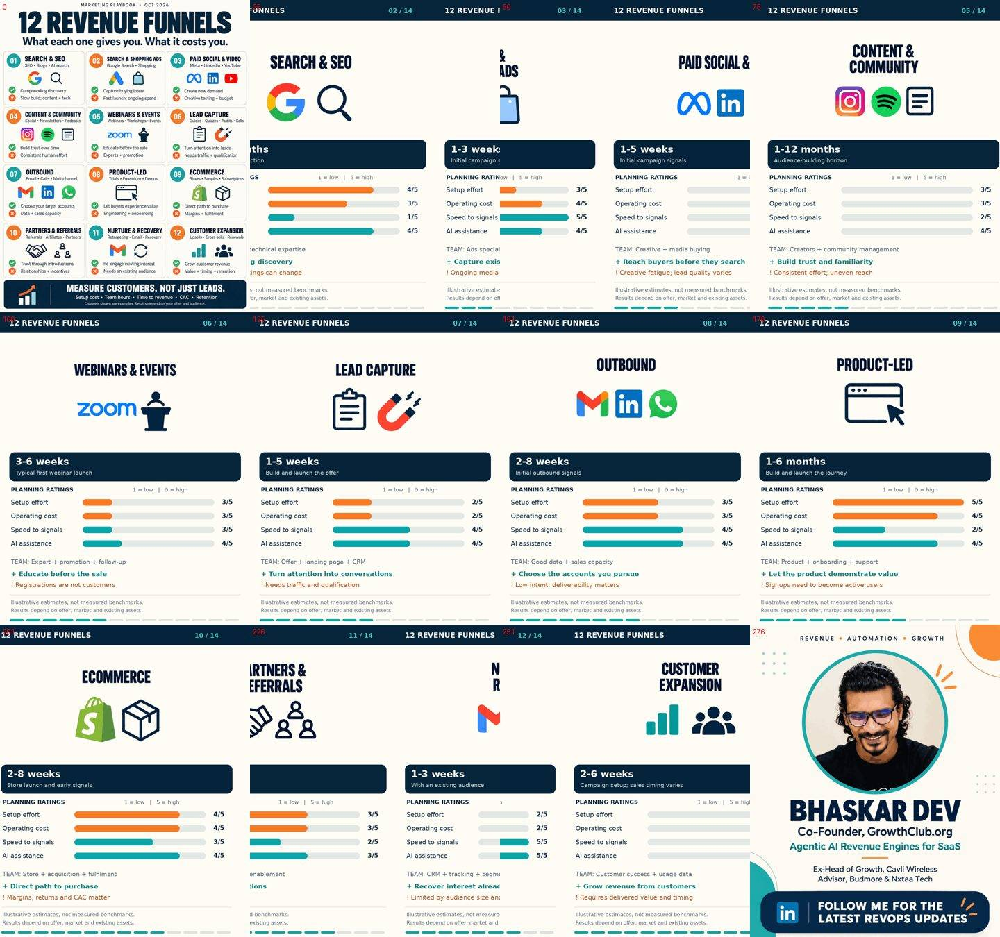
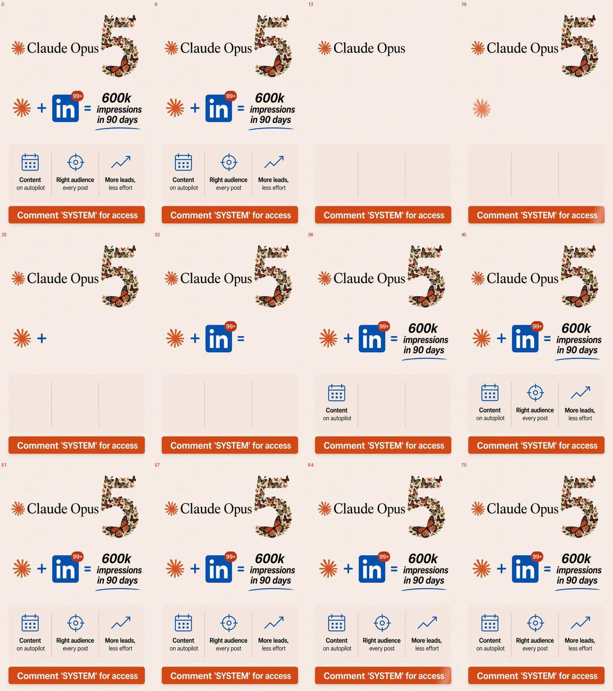
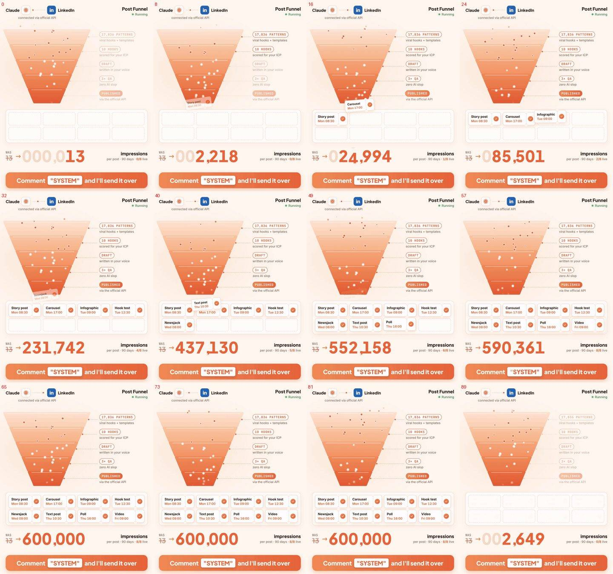

C1PICKED · Carousel, 9 pagesCTA: webinar
I sat on a listed board that was sold for £700 million…
This is what I saw first hand:
- Teaches
- What sitting on an AIM-listed board through a sale taught her: strong governance, shareholder alignment and executive oversight, seen first hand.
- Asset
- Illustrated story carousel in the sample's engraved-collage art direction (aged cream paper, sepia, rose and gilt). Cover: Susanne's avatar framed as an engraving. One lesson per page: governance, shareholder alignment, executive oversight, then what a new NED should copy.
- Sample
- HD07 · Harry Dry · Educational Carousel · Illustrated story carousel · original post
- Facts
- Sign-off: SafeCharge, AIM-listed, sold for £700 million (webinar [14:02], buyer not to be named). New BL row.
C2PICKED · Carousel, 8 pagesCTA: webinar
The Chair vs the CEO…
One runs the board. The other runs the company.
- Teaches
- Chair versus CEO: the chair runs the board and judges the executive; the CEO runs the company and delivers the plan.
- Asset
- Comparison deck with the sample's text-selection device: each page highlights one duty as if selected in an editor, with drag handles. Lavender-grey panels, black type, blue selection.
- Sample
- HD02 · Harry Dry · Educational Carousel · Comparison slide deck · original post
- Facts
- Module 1 slides 14 and 15 (new WS row). Lecturer not named.
C3Carousel, 9 pagesCTA: webinar
Board search is changing in 2027…
Here's how smart executives get onto the long list:
- Teaches
- How headhunters fill board seats: the long list, the shortlist, the final interview, and how to be on the long list before it exists.
- Asset
- Step-by-step deck with the sample's literal-metaphor imagery: a road-sign cover (Kie.ai, no people), white body pages with blue accents, one stage per page.
- Sample
- HD03 · Harry Dry · Educational Carousel · Step-by-step framework deck · original post
- Facts
- Webinar framework 18, WS-021.
C4PICKED · Carousel, 8 pagesCTA: webinar
Things every new NED should know about their sector before day one.
5 sub-sectors, 5 different risks:
- Teaches
- Five fintech sub-sectors and the one thing each board must watch: wealthtech, regtech, insurtech, capital markets, digital assets.
- Asset
- Checklist deck in the sample's dark 'old library' art direction with gold and white type and radial annotations around one object per page (Kie.ai still life, no people).
- Sample
- HD15 · Harry Dry · Educational Carousel · Checklist / list deck · original post
- Facts
- Module 3 board checklists 8, 9, 10, 13, 14 (new WS rows).
C5Carousel, 8 pagesCTA: board-programme
PRO board moves to add value faster in your first board meeting in 2027
- Teaches
- The pop-up board: what to do and what to avoid when you sit in on a real fintech board for the first time.
- Asset
- Do and don't card system from the sample: green do cards and red don't cards, each with the exact question to ask. White ground, magenta and teal.
- Sample
- HD23 · Harry Dry · Educational Carousel · Case-study carousel · original post
- Facts
- WS-020, BL-043 and the Swiss digital asset pop-up board example (webinar [25:01]).
C6Carousel, 9 pagesCTA: webinar
Bye, bye 'we'll sort the data room later'…
Here's the investor-ready pack a board should see before any raise:
- Teaches
- The investor-ready document pack a board should see before any raise: teaser, business plan, financial model, pitch deck, data room.
- Asset
- Product-walkthrough deck: each document personified (late, messy, ready) and shown as an annotated mock page built in HTML. White, black and blue.
- Sample
- HD31 · Harry Dry · Educational Carousel · Product-walkthrough carousel · original post
- Facts
- Module 4 S11 and S15 (new WS rows).
A1PICKED · Animated carousel (GIF slideshow)CTA: webinar
AGENTIC AI IS STEP 3, NOT STEP 1.
A board's first job is to know which step the firm is really on.
- Teaches
- The four steps of generative AI in a fintech: tools and training, simple process improvement, agentic AI, re-engineering the organisation.
- Asset
- Animated slideshow from the sample: one identical scorecard card per step with bars that fill, a page counter and progress dashes. Cream, navy and orange.
- Sample
- BD01 · Bhaskar D. · Educational Carousel · Animated GIF slideshow carousel · original post
- Facts
- Module 6 S24 to S27 (new WS row). Lecturer not named.

A2Animated imageCTA: webinar
A board is not one job.
It is six.
- Teaches
- Who sits around a board table: chair, senior independent director, independent NEDs, CEO, CFO and company secretary, and the committees under them.
- Asset
- Animated org chart from the sample: the chair card drops in, roles fan out on bracket connectors, committees light up in colour-coded columns. Off-white paper, warm tinted borders.
- Sample
- ID06 · Ipsita Dhar · Framework Infographic · Animated agent org chart · original post
- Facts
- Module 1 key participants and committees; webinar framework 4 ('almost the vice chair').

A3PICKED · Animated imageCTA: webinar
Base fee + committee + committee chair.
Here's how a listed NED fee is built, from one board I sat on:
- Teaches
- How a listed-company NED fee is built: base fee plus committee membership plus committee chair, from one FTSE 250 board she sat on.
- Asset
- Animated equation card from the sample: three tiles slide in with a plus between them and the total counts up. Blush cream with a rust accent swapped to FINTECH purple.
- Sample
- BK13 · Bharath Krishna Pai · Promo Graphic · Animated equation promo card · original post
- Facts
- Sign-off: about £70,000 base, about £5,000 per committee, about £15,000 extra to chair a committee (webinar [45:01]). Company not named.

A4Animated imageCTA: webinar
Every board has four kinds of people talking about AI.
Which one you listen to comes down to 2 things:
- Teaches
- Zoomers, Bloomers, Gloomers and Doomers: four ways boards talk about AI, and the balanced stance, neither magic nor menace.
- Asset
- Animated 2x2 from the sample: rotated axis labels (capability, impact) draw in, each quadrant lights in its own accent, the centre stamps 'Neither magic nor menace'. Black ground.
- Sample
- AV25 · Alex Vacca · Framework Infographic · Animated Framework diagram · original post
- Facts
- Module 6 S6 to S9 (new WS row). Lecturer not named.
A5PICKED · Animated imageCTA: webinar
A fintech's growth is only as good as its funnel.
5 stages a board should be able to read:
- Teaches
- The unit economics funnel as a governance tool: lead, awareness, selection, onboarding, grow and add customers. Where a board looks for leaks.
- Asset
- Animated funnel from the sample: particles flow down five tiers that fill in turn, with a stage counter. Peach to burnt orange gradient.
- Sample
- AS01 · Aitijya Sarkar · Framework Infographic · Animated funnel counter · original post
- Facts
- Module 3 framework 19 (new WS row). No invented conversion numbers.

A6Animated imageCTA: board-programme
Six to twelve months from executive to first board seat.
The full route:
- Teaches
- The route from executive to first board seat as a game board: choose your sub-sector, build relationships for six months, get on long lists, land a smaller private fintech.
- Asset
- Animated winding game-board road from the sample: a marker walks milestone to milestone, each node lighting up. Dark ground, warm road, alternating white, orange and blue nodes.
- Sample
- AV10 · Alex Vacca · Framework Infographic · Animated Framework diagram · original post
- Facts
- WS-002, WS-021, webinar framework 20. Different angle from batch 3 T1 (that taught the four reasons; this is the route).
S1PICKED · Single imageCTA: webinar
Fintech is not one market.
It is four boxes and a layer underneath.
- Teaches
- The fintech map: consumer or business, balance sheet or capital light, plus the infrastructure layer underneath.
- Asset
- Labelled 2x2 from the sample with gradient axis arrows and a tinted verdict chip per quadrant (what a board watches there). Black ground.
- Sample
- AV49 · Alex Vacca · Framework Infographic · 2x2 matrix · original post
- Facts
- Module 3 framework 4 (new WS row). Example companies only as named in the lecture.
S2PICKED · Single imageCTA: webinar
Every board runs on committees.
Here's what each one does, on one page:
- Teaches
- Board committees on one page: audit and risk, remuneration, nomination, advisory groups, and the senior independent director.
- Asset
- Multi-module cheat sheet from the sample: each committee a colour-outlined module with its remit and the question a new NED should ask there. Dark ground.
- Sample
- AV44 · Alex Vacca · Framework Infographic · Cheat-sheet · original post
- Facts
- Module 1 sub-committees; webinar framework 4.
S3Single imageCTA: webinar
I spent years helping fintechs raise capital.
The round starts long before the pitch. Here's the timeline a NED should know:
- Teaches
- The fundraising journey from seed to exit, and what the NED does at each stage.
- Asset
- Timeline from the sample: a progress rail across the stages, the final card flooded in one bright colour for the exit. Light grey-blue canvas.
- Sample
- PC24 · Patrick James Cumming · Framework Infographic · Timeline · original post
- Facts
- BL-021, Module 4 stages and WS-015.
S4Single imageCTA: webinar
Governance gets called bureaucracy.
I've seen what it does when a company is sold.
- Teaches
- Why governance is worth celebrating, in her own words from the SafeCharge board.
- Asset
- Quote over photo from the sample: a light quote card floated over a full Kie.ai scene of Susanne (boardroom pose, already made, no new credits).
- Sample
- AB03 · Austin Belcak · Quote Card · Quote over photo · original post
- Facts
- Sign-off: the SafeCharge quote (webinar [14:02]). Alternative to C1.
S5PICKED · Single imageCTA: webinar
Less than 10% of job specs are ever published.
The rest come through people you know.
- Teaches
- The hidden board market: most roles are never published, so relationships decide who hears about them.
- Asset
- Plain quote card from the sample: paper-speckle background, near-black type, her name line in FINTECH blue.
- Sample
- AB21 · Austin Belcak · Quote Card · Plain quote card · original post
- Facts
- Sign-off: 'less than 10% of all job specs actually published' is her statement (webinar [44:02]); attribute it to her.
S6PICKED · Text postCTA: webinar
Your 10-year track record is not a moat any more.
AI-native competitors can be faster, better and cheaper.
- Teaches
- AI is a business-model question for the board, not an IT one: AI-native competitors can be faster, better and cheaper than firms with 10 years of history.
- Asset
- Text only, the sample's contrarian essay structure: the claim, the reality, what boards miss, what to do.
- Sample
- PC40 · Patrick James Cumming · Text Announcement · Contrarian POV essay · original post
- Facts
- Webinar framework 15 (new WS row).
S7Text postCTA: board-programme
"How do you behave differently as a board member?" is something aspiring board members ask me all the time.
- Teaches
- How a board member behaves differently from an executive: nose in fingers out, judge the executive, manage the agenda, build trust.
- Asset
- Text only, the sample's numbered how-to: the question, the reframe, five numbered moves, a one-line close.
- Sample
- AB23 · Austin Belcak · Text Playbook · Numbered how-to guide · original post
- Facts
- Her line (Module 3), BL-031, Module 1 frameworks 1, 9 and 10.
S8Single imageCTA: webinar
Applying for board roles and hearing nothing back?
Then join me at the next board webinar.
- Teaches
- Invitation to the next board webinar.
- Asset
- Event graphic from the sample: Susanne's avatar cut out and pointing, a blue CTA bar with the date, a proof row.
- Sample
- AB14 · Austin Belcak · Promo Graphic · Event / webinar graphic · original post
- Facts
- Needs the next webinar date (the last confirmed one was 20 November).